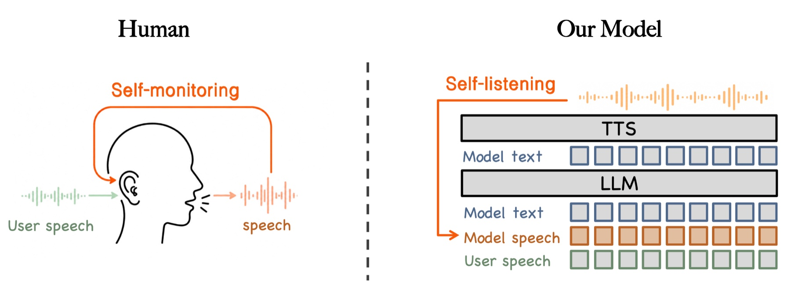
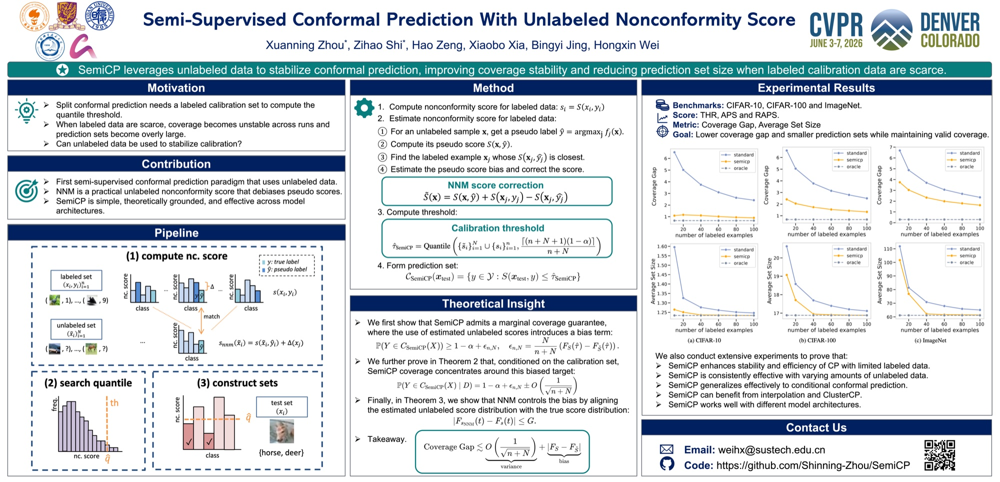
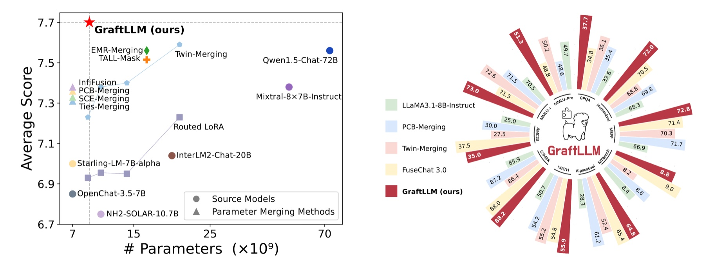

About Me
Hi! I am a second-year M.Phil. student in Computer Science at the School of Data Science, The Chinese University of Hong Kong, Shenzhen, advised by Prof. Benyou Wang and Prof. Tom Ko. Prior to this, I received my bachelor's degree in Data Science and Big Data Technology from the Department of Mathematics, Harbin Institute of Technology, Shenzhen, in 2025, advised by Prof. Ho-Kin Tang and Prof. Jing Li. I also worked as a research assistant at Southern University of Science and Technology, advised by Prof. Hongxin Wei and Prof. Bingyi Jing. My research interests focus on multimodal understanding, generation, and interaction. I welcome collaboration, so please feel free to reach out.
I am currently seeking Ph.D. opportunities for Fall 2027 and research internship positions.
News
I attended CVPR 2026 in Denver and had a wonderful experience!
One first-author paper was accepted to CVPR 2026.
One paper was accepted to ICLR 2026.
One paper was accepted for publication in JMLR.
I started my M.Phil. studies at CUHK(SZ).
Experience
Papers

Preprint
CVPR 2026
ICLR 2026 JMLR
JMLR

Awards & Honors
- Outstanding Undergraduate Graduation Thesis (5/172)
- Outstanding Academic Scholarship (Top 20%)
- Honorable Mention in the Mathematical Contest in Modeling
- First Prize in the China Undergraduate Mathematical Contest in Modeling
- Third Prize in the Chinese Mathematics Competition
Service
Reviewer
- I serve as a reviewer for AI research venues, including ACL Rolling Review (ARR) and CVPR.
Teaching Assistant
- CSC4120: Design and Analysis of Algorithms, by Prof. Costas Courcoubetis, CUHK(SZ) (2026 Fall)
- ORCA2500: Foundations of Data Science, by Prof. Eric Stratman, CUHK(SZ) & Columbia University (2026 Summer)
- STA3020: Statistical Inference, by Prof. Jiasheng Shi, CUHK(SZ) (2026 Spring)
- CSC4120: Design and Analysis of Algorithms, by Prof. Costas Courcoubetis, CUHK(SZ) (2025 Fall)
- © Xuanning Zhou. All rights reserved.
- Design: HTML5 UP